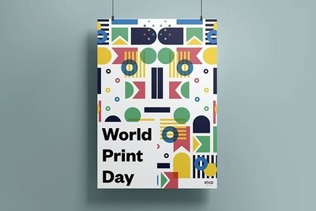

Affiches
Wat zijn Affiches?
Definitie
Affiches zijn grote, gedrukte documenten die worden gebruikt om boodschappen, advertenties of aankondigingen te communiceren. Ze worden meestal op prominente plaatsen opgehangen om maximale zichtbaarheid te garanderen, zoals op muren, billboards, of in etalages.
Voordelen van Affiches
- Grote Bereikbaarheid: Ideaal voor het bereiken van een breed publiek, dankzij hun grote formaat en opvallende ontwerp.
- Visuele Impact: Met krachtige afbeeldingen en teksten trekken affiches de aandacht en blijven ze in het geheugen van mensen hangen.
- Flexibiliteit: Kunnen worden aangepast aan verschillende afmetingen, kleuren, en materialen voor diverse toepassingen.
Toepassingen van Affiches
Affiches worden vaak gebruikt voor:
- Reclamecampagnes: Voor het promoten van producten, diensten of evenementen.
- Evenementen: Om concerten, festivals, of tentoonstellingen aan te kondigen.
- Educatieve Doeleinden: Voor het verspreiden van informatie in scholen, musea, of openbare ruimtes.
- Kunst en Cultuur: Voor het tonen van kunstwerken of culturele boodschappen.
Hoe Maak je een Effectieve Affiche?
Een goede affiche combineert opvallende beelden met duidelijke, beknopte tekst om de boodschap effectief over te brengen. Het is belangrijk om de juiste balans te vinden tussen visuele elementen en informatie, zodat de affiche zowel aantrekkelijk als informatief is.
Belangrijke Overwegingen bij het Ontwerpen van Affiches
- Formaat: Het formaat van de affiche moet passen bij de locatie waar deze zal worden opgehangen.
- Kleuren: Gebruik contrasterende kleuren om de leesbaarheid te verbeteren en de aandacht te trekken.
- Lettergrootte: Zorg ervoor dat de tekst leesbaar is vanaf een afstand, vooral de belangrijkste informatie.